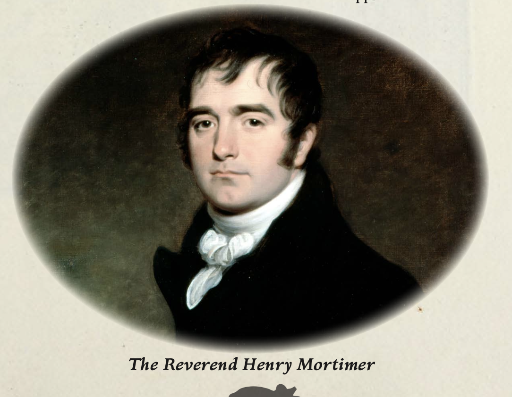

Rev Henry Mortimer Draft
Physical Description
Handsome, clever-looking man of about thirty with an intuitive gaze and a sarcastic wit that surfaces readily in conversation. Carries himself with the easy confidence of a well-educated clergyman, though a careful observer might note the strain behind his eyes.
Background
Henry Mortimer is the vicar of Osney Grange, Hampshire. He married Charlotte Goodwin for love, but when she was afflicted by a ghoul curse and began transforming, he faked her death in December 1811 rather than lose her. The experience shattered his Christian faith. Under the tutelage of Dr. Thornton Beamish, he has turned to sorcery, seeking a way to transfer Charlotte’s curse to another vessel — specifically, the visiting investigator Marina Garrick. Despite his dark intentions, Henry remains a dedicated husband and a good brother to Eleanor.
Stat Block
Characteristics
| STR | CON | SIZ | DEX | INT | POW | APP | EDU |
|---|---|---|---|---|---|---|---|
| 50 | 40 | 50 | 50 | 70 | 60 | 60 | 75 |
- HP: 9 | SAN: 50 | MP: 12
- DB: 0 | Build: 0 | Move: 8
Combat
| Attack | Skill | Damage |
|---|---|---|
| Brawl | 25% (12/5) | 1D3 |
| Dodge | 25% (12/5) | — |
Skills
Accounting 35%, Credit Rating 50%, Etiquette 55%, History 35%, Language (English) 70%, Language (Greek) 50%, Language (Latin) 40%, Library Use 40%, Listen 60%, Natural Philosophy 30%, Religion 70%, Spot Hidden 50%
Connections
- Location: Osney Grange, Hampshire
- Associates: Mrs_Charlotte_Mortimer, Miss_Eleanor_Mortimer, Dr_Thornton_Beamish, Squire_Anthony_Goodwin
Campaign History
- Chapter 0.1 — Curate & Curability: Lured Marina_Garrick to Osney_Grange as a vessel for the ghoul curse ritual. When Marina escaped the dinner table, the ritual was forced in the attic. Marina broke free from the chair when Charlotte approached, and Charlotte — now fully feral — turned on Henry. He was consumed by the ghoul.
Relationships
- Spouse Mrs Charlotte Mortimer — Married Charlotte for love. Has devoted himself to sorcery to save her from the ghoul curse.
- Sibling Miss Eleanor Mortimer — Close confidant who helps maintain the facade of Charlotte's death.
- Occult ally Dr Thornton Beamish — Studies sorcery under Beamish's tutelage. A pragmatic alliance born of desperation.
- Antagonist Marina Garrick — Intended ritual victim — plans to use Marina as a vessel to transfer Charlotte's curse.